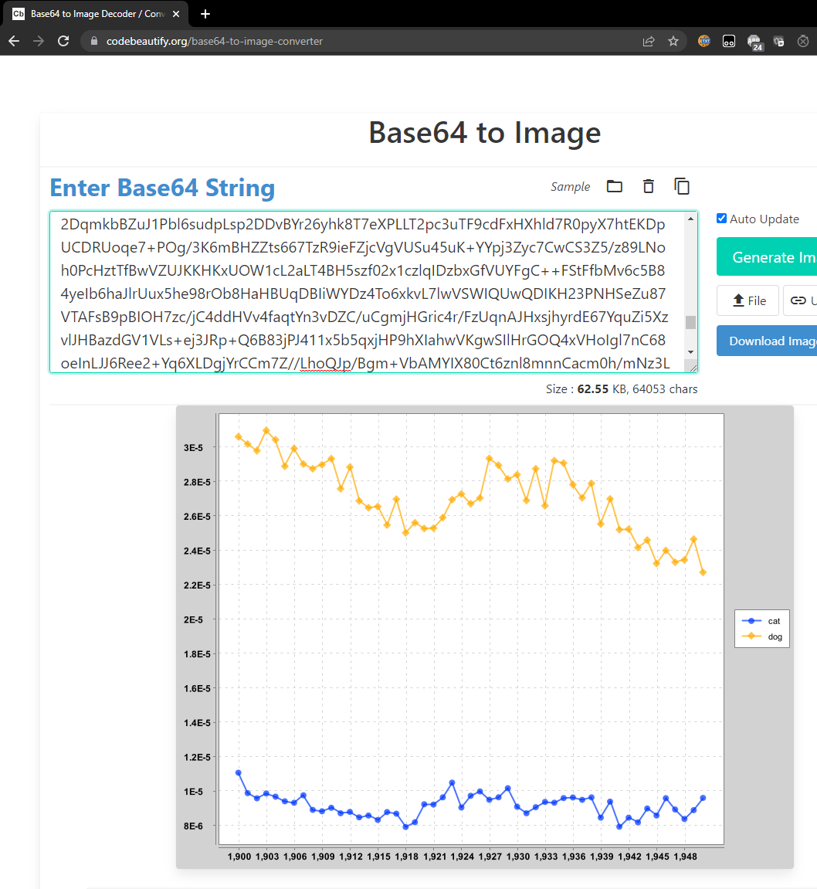
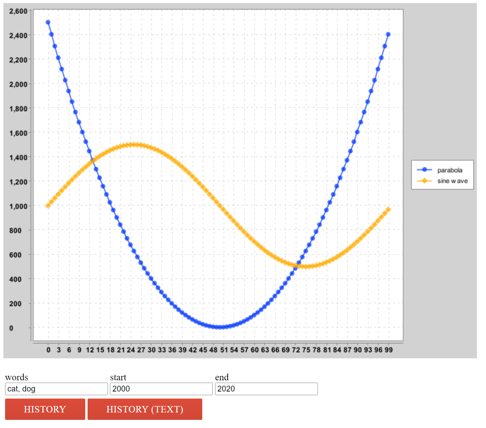

项目 2A：Ngordnet（N元语法）
常见问题
每个作业顶部都会有一个常见问题（FAQ）链接。你也可以通过在 URL 末尾添加 "/faq" 来访问。项目 2A 的常见问题 位于 这里 。
介绍
在这个项目中，我们将构建一个基于浏览器的工具，用于探索英文文本中词汇使用的历史。我们已经提供了前端代码（使用 Javascript 和 HTML），用于收集用户输入并显示输出。你的 Java 代码将作为这个工具的后端，接受输入并生成适当的输出以供显示。
可以在下面找到本项目的视频介绍（或点击 此链接 ）。
为了支持这个工具，你将编写一系列 Java 包来进行数据分析。在此过程中，我们将获得大量使用不同有用数据结构的经验。项目的早期部分（proj2a）会明确告诉你要编写哪些函数和创建哪些类。后期部分（proj2b）将更加开放，由你自己设计。
你可以在 ngordnet.datastructur.es 查看项目的工作人员解决方案。
开始使用
要开始使用，请像往常一样使用
git pull skeleton main
。
你还需要下载项目 2 的数据文件（由于空间原因，没有通过 GitHub 提供）。
点击 此链接 下载数据文件。
你应该将此文件解压到 proj2 目录中，使
data文件夹与src和static文件夹处于同一级别。
完成此步骤后，你的
proj2a
目录应如下所示：
proj2a
├── data
│ ├── ngrams
│ └── wordnet
├── src
├── static
├── tests
注意，我们已经在骨架代码中设置了隐藏的
.gitignore
文件，
这样 Git 就不会上传这些数据文件。这是有意为之的。
将数据文件上传到 GitHub 会给每个人带来很多麻烦，所以请不要修改任何名为
.gitignore
的文件。如果你需要在多台机器上工作，你应该在每台机器上分别下载一次 zip 文件。
如果
NgordnetQuery
无法编译，请确保你使用的是 Java 15（预览版）或更高版本（最好是 17+）。
可以在
此链接
找到为本项目设置计算机的视频指南。
注意，某些文件/文件名可能略有不同；特别是，视频中的
hugbrowsermagic
目录在你的骨架文件中现在称为
browser
。
构建 N元语法查看器
Google Ngram 数据集 提供了数 TB 的信息， 记录了英语中所有观察到的单词和短语（或更准确地说，所有观察到的 n元语法 ）的历史频率。Google 在网上提供了 Google Ngram 查看器 ， 允许用户可视化单词和短语的相对历史流行度。例如，上面的链接绘制了短语 "global warming"（一个2元语法）和 "to the moon"（一个3元语法）的 加权流行度历史 。
在项目 2A 中，你将构建一个只处理 1元语法的工具版本。换句话说，你只能处理单个单词。我们将只使用完整 1元语法数据集的一小部分（约 300 MB），因为更大的数据集需要更复杂的技术，这超出了本课程的范围。
TimeSeries
TimeSeries
是现有
TreeMap
类的专用扩展，其中键类型参数始终为
Integer
，值类型参数始终为
Double
。每个键对应一个年份，每个值对应该年份的一个数值数据点。你可以在
这里
找到
TreeMap
API，查看哪些方法可供你使用。
例如，以下代码将创建一个
TimeSeries
，并将 1992 年与值 3.6 关联，1993 年与值 9.2 关联。
TimeSeries ts = new TimeSeries();
ts.put(1992,3.6);
ts.put(1993,9.2);
TimeSeries
类在它继承的
TreeMap
类基础上提供了一些额外的实用方法。
根据文件中提供的 API，填写
TimeSeries类（位于src/ngrams/TimeSeries.java文件中）。请务必阅读每个方法上方的注释。
有关如何使用
TimeSeries对象的示例，请查看我们提供的TimeSeriesTest.java文件中名为testFromSpec()的测试。 该测试创建了一个猫和狗种群的TimeSeries，然后计算它们的总和。注意，1993 年没有值，因为那一年没有出现在任何一个TimeSeries中。
你不能向此类添加额外的公共方法。欢迎你添加额外的私有方法。
TimeSeries 提示
-
TimeSeries对象不应有实例变量。TimeSeries是一个TreeMap。这意味着你的TimeSeries类也可以访问 TreeMap 拥有的所有方法； 请参阅 TreeMap API 。 -
有几个方法要求你比较两个
TimeSeries的数据。你不应该有任何在年份或值不可用时填充零的代码。 -
提供的
TimeSeriesTest类提供了对TimeSeries类的简单测试。随时可以添加你自己的测试。-
注意，我们给你的单元测试
不
评估
dividedBy方法的正确性。
-
注意，我们给你的单元测试
不
评估
-
你会注意到在
testFromSpec()中，我们没有直接比较expectedTotal和totalPopulation.data()。这是因为 double 类型容易出现舍入误差， 尤其是在除法运算之后（原因你将在 61C 中学习）。因此，当x和y是 double 类型时，assertThat(x).isEqualTo(y)可能会意外地返回 false。 相反，你应该使用assertThat(x).isWithin(1E-10).of(y)，只要x和y彼此相差在 $10^{-10}$ 以内，它就会返回 true。 -
你可以假设
dividedBy操作永远不会除以零。
NGramMap
NGramMap
类将提供各种方便的方法来与 Google 的 N元语法数据集交互。这个任务比创建
TimeSeries
类更具开放性和挑战性。与
TimeSeries
一样，你将填写现有
NGramMap.java
文件的方法。
NGramMap 不应继承任何类。
如果你调用一个返回
TimeSeries
的方法，而给定的方法调用没有可用数据，你应该返回一个空的
TimeSeries
。例如，
ngm.weightHistory("asdfasdf")
应该返回一个空的
TimeSeries
，因为
"asdfasdf"
不是数据集中的单词。再举一个例子，
ngm.countHistory("adopt", 1400, 1410)
也应该返回一个空的
TimeSeries
，因为
"adopt"
在那些年份没有数据。
根据文件中提供的 API，填写
NGramMap类（位于src/ngrams/NGramMap.java文件中）。再次强调，请务必阅读每个方法上方的注释。
有关
NGramMap工作的示例，NGramMapTest中的testOnLargeFile()从top_14377_words.csv和total_counts.csv文件（如下所述）创建一个NGramMap。然后它执行与 1850 年至 1933 年期间单词 "fish" 和 "dog" 的出现相关的各种操作。
你不能向此类添加额外的公共方法。欢迎你添加额外的私有方法。
输入文件格式
N元语法数据集有两种不同的文件类型。第一种是"单词文件"。单词文件的每一行提供特定英语单词在给定年份的历史信息，以制表符分隔。
airport 2007 175702 32788
airport 2008 173294 31271
request 2005 646179 81592
request 2006 677820 86967
request 2007 697645 92342
request 2008 795265 125775
wandered 2005 83769 32682
wandered 2006 87688 34647
wandered 2007 108634 40101
wandered 2008 171015 64395
每一行的第一个条目是单词。第二个条目是年份。第三个条目是该单词在当年任何书籍中出现的次数。第四个条目是包含该单词的不同来源的数量。 你的程序应该忽略第四列。 例如，从上面的文本文件中，我们可以观察到单词 "wandered" 在 2008 年出现了 171,015 次，这些出现分布在 64,395 个不同的文本中。对于本项目，我们从不关心第四个条目（总卷数）。
另一种文件类型是"计数文件"。计数文件的每一行提供每个日历年可用的总语料库数据信息，以逗号分隔。
1470,984,10,1
1472,117652,902,2
1475,328918,1162,1
1476,20502,186,2
1477,376341,2479,2
每一行的第一个条目是年份。第二个是当年所有文本中记录的总单词数。第三个数字是当年的总文本页数。第四个是当年的不同来源总数。你的程序应该忽略第三和第四列。例如，我们看到 Google 从 1470 年开始正好有一个英语文本，它包含 984 个单词和 10 页。在我们的项目中，10 和 1 是无关的。
你可能想知道为什么一个文件是制表符分隔的，另一个是逗号分隔的。这不是我做的，是 Google 做的。幸运的是，这种差异不会太难处理。
NGramMap 提示
项目的这一部分有很多需要思考的地方。我们试图模拟现实世界中的情况，即你有一些大型的开放性问题，必须从头开始找出方法。这可能会令人生畏！弄清楚如何进行可能需要一些时间和大量的实验。为了避免事情变得太困难，我们至少提供了一个要实现的方法列表。请记住，在现实世界中（以及在 proj2b 和 proj3 中），甚至方法列表都将由你自己选择。
你的代码应该足够快，以便你可以使用
top_14377_words.csv
创建一个
NGramMap
。加载时间应少于 60 秒（在较旧的计算机上可能会稍长一些）。如果你的计算机有足够的内存，你也应该能够加载
top_49887_words.csv
。
-
你在这个类中的大部分工作将是实现构造函数。你需要解析提供的数据文件，并将这些数据存储在你选择的一个或多个数据结构中。
- 这个选择很重要，因为选择正确的数据结构可以使你在实现其余方法时更容易。因此，我们建议先查看其余方法，以帮助你决定什么数据结构可能最好；然后，开始实现构造函数。
-
避免使用 HashMap 或 TreeMap 作为你的映射的
实际类型参数
。这通常表明你真正想要的是一个自定义定义的类型。换句话说，如果你的实例变量包含一个看起来像
HashMap<blah, HashMap<blah, blah>>的嵌套映射，那么TimeSeries或你想到的其他类可能会有用。 -
我们还没有教你如何在 Java 中读取文件。我们建议使用
In类。官方文档可以在 这里 找到。但是，欢迎你使用你在网上学到的任何技术。我们提供了一个示例类FileReaderDemo.java，给出了如何使用In的示例。 -
如果你使用
In，不要使用readAllLines或readAllStrings。这些方法很慢。相反，一次读取一块输入。请参阅src/main/FileReaderDemo.java中的示例。-
此外，要检查文件中是否还有剩余行，你应该使用
hasNextLine（而不是是Empty）。
-
此外，要检查文件中是否还有剩余行，你应该使用
-
我们提供的测试只涵盖了一些方法，但有些方法只在非常大的文件上测试。你需要编写额外的测试。
-
我们建议从较小的输入文件之一开始，而不是使用大输入文件之一（例如
top_14377_words.csv），可以是very_short.csv或words_that_start_with_q.csv。
-
我们建议从较小的输入文件之一开始，而不是使用大输入文件之一（例如
- 就像在 TimeSeries 中一样，你不应该有任何在值不可用时填充零的代码。
-
如果它有助于加快代码速度，你可以假设年份参数在 1400 到 2100 之间。这些变量在
TimeSeries类中存储为常量MIN_YEAR和MAX_YEAR。 -
NGramMap不应继承任何其他类。 - 你的方法应该很简单！如果你选择正确的数据结构，方法应该相对较短。
-
如果单词无效，返回一个空的
TimeSeries。
HistoryTextHandler
在项目 2A 的最后一部分，我们将进行一些软件工程工作，搭建一个可以处理 NgordnetQuery 的 Web 服务器。虽然这部分内容与数据结构没有严格的关系，但能够将项目部署到实际使用中是非常重要的。
注意：
只有当你相当确定
TimeSeries
和
NGramMap
正常工作时，你才应该开始这一部分。
-
在你的 Web 浏览器中，打开
static文件夹中的ngordnet_2a.html文件。你可以从操作系统的文件管理器中执行此操作，或者在 IntelliJ 中右键单击ngordnet_2a.html，单击"Open in"，然后单击"Browser"。你可以使用任何你想要的浏览器，不过助教最熟悉 Chrome。你会看到一个基于 Web 浏览器的界面，最终（当你完成项目时）将允许用户输入单词列表并显示可视化效果。 -
尝试在"words"框中输入 "cat, dog"，然后单击
History (Text)。你会发现没有显示任何有用的内容。可选：如果你在 Web 浏览器中打开开发者工具（请参阅 Google 了解如何操作），你会看到一个类似 "CONNECTION_REFUSED" 或 "INVALID_URL" 的错误。问题是 Javascript 试图访问服务器来生成结果，但没有运行中的 Web 服务器可以处理查看 cat 和 dog 历史记录的请求。 -
打开
main.Main类。这个类的main方法首先创建一个NgordnetServer对象。这个类的 API 如下：首先，我们在NgordnetServer对象上调用startUp，然后使用register命令"注册"一个或多个NgordnetQueryHandler。这里的具体细节超出了我们课程的范围。基本思想是，当你调用
hns.register("historytext", new DummyHistoryTextHandler(ngm))时，会创建一个DummyHistoryTextHandler类型的对象，它将处理对History (Text)按钮的任何点击。 -
尝试运行
main.Main类。在 IntelliJ 的终端输出中，你应该看到一行：INFO org.eclipse.jetty.server.Server - Started...，这意味着服务器已正确启动。现在再次打开ngordnet_2a.html文件，再次输入 "cat, dog"，然后单击History (Text)。这次，你应该看到一条消息，显示：You entered the following info into the browser: Words: [cat, dog] Start Year: 2000 End Year: 2020 -
现在打开
main.DummyHistoryTextHandler，你会看到一个handle方法。每当用户单击History (Text)按钮时，就会调用这个方法。相反，预期的行为应该是，当用户针对上面的提示单击History (Text)时，应显示以下文本：
cat: {2000=1.71568475416827E-5, 2001=1.6120939684412677E-5, 2002=1.61742010630623E-5, 2003=1.703155141714967E-5, 2004=1.7418408946715716E-5, 2005=1.8042211615010028E-5, 2006=1.8126126955841936E-5, 2007=1.9411504094739293E-5, 2008=1.9999492186117545E-5, 2009=2.1599428349729816E-5, 2010=2.1712564894218663E-5, 2011=2.4857238078766228E-5, 2012=2.4198586699546612E-5, 2013=2.3131865569578688E-5, 2014=2.5344693375481996E-5, 2015=2.5237182007765998E-5, 2016=2.3157514119191215E-5, 2017=2.482102172595473E-5, 2018=2.3556758130732888E-5, 2019=2.4581322086049953E-5}
dog: {2000=3.127517699525712E-5, 2001=2.99511426723737E-5, 2002=3.0283458650225453E-5, 2003=3.1470761877596034E-5, 2004=3.2890514515432536E-5, 2005=3.753038415155302E-5, 2006=3.74430614362125E-5, 2007=3.987077208249744E-5, 2008=4.267197824115907E-5, 2009=4.81026086549733E-5, 2010=5.30567576173992E-5, 2011=6.048536820577008E-5, 2012=5.179787485962082E-5, 2013=5.0225599367200654E-5, 2014=5.5575537540090384E-5, 2015=5.44261096781696E-5, 2016=4.805214145459557E-5, 2017=5.4171157785607686E-5, 2018=5.206751570646653E-5, 2019=5.5807040409297486E-5}
要通过自动评分，输出格式必须完全匹配。
- 所有文本行，包括最后一行，都应以换行符结束。
- 所有空格和标点符号（逗号、大括号、冒号）都应遵循上面的示例。
这些数字表示给定年份中单词 cat 和 dog 的
加权流行度历史
。由于舍入误差，你的数字可能与上面显示的不完全相同。你的格式应与上面显示的完全一致：具体来说是单词，后跟冒号，后跟空格，后跟相应
TimeSeries
的字符串表示，其中键值对以逗号分隔的列表形式出现在大括号内，键和值之间用等号分隔。注意，你不需要编写任何代码来生成每个
TimeSeries
的字符串表示，你可以直接使用
toString()
方法。
现在是实现 HistoryText 按钮的时候了！
创建一个名为
HistoryTextHandler.java的新文件，它接收给定的NgordnetQuery并返回与上述格式相同的字符串。然后，修改
Main.java，以便当有人单击History (Text)时使用你的HistoryTextHandler。换句话说，你应该注册你的HistoryTextHandler类，而不是注册DummyHistoryTextHandler。
你可能会注意到，当服务器启动时，
Main.java会打印出一个链接。 如果你觉得更方便，你可以直接点击这个链接，而不是手动打开ngordnet_2a.html文件。
HistoryTextHandler 提示
-
HistoryTextHandler的构造函数应采用以下形式：public HistoryTextHandler(NGramMap map)。 -
使用
DummyHistoryTextHandler.java作为指导，在适当的地方进行模式匹配。能够修改示例代码并使其按照你的意愿工作是一项非常重要的现实世界技能。大胆实验，不要害怕弄坏东西！ -
对于项目 2A
，你可以忽略
NgordnetQuery的k实例变量。 -
使用
TimeSeries类中从TreeMap继承的.toString()方法。 -
为了让你的
HistoryTextHandler能够做一些有用的事情，它需要能够访问存储在NGramMap中的数据。 不要将 NGRAM MAP 变成静态变量！ 这被称为"全局变量"，很少是任何问题的适当解决方案。提示：你的HistoryTextHandler类可以有一个构造函数。 -
如果单词无效，请考虑
NGramMap是如何处理这种情况的。
HistoryHandler
上一节中的基于文本的历史记录除了自动评分你的工作外，没有太大用处。实际上使用我们的工具来发现有趣的东西将需要可视化。
main.PlotDemo
提供了示例代码，它使用你的
NGramMap
生成一个可视化图表，显示 1900 年到 1950 年间单词 cat 和 dog 的加权流行度历史。尝试运行它。如果你的
NGramMap
类是正确的，你应该看到一个非常长的字符串打印到你的控制台，可能看起来像这样：
iVBORw0KGg...
这个字符串是图像文件的 base64 编码。要可视化它，请访问 codebeautify.org 。 将整个字符串复制并粘贴到网站中，你应该会看到一个类似于下图的图表：

这是怎么回事？你的代码打印的字符串就是图像。请记住，任何数据都可以表示为位串。这个网站知道如何使用预定义的标准将这个字符串解码成相应的图像。
如果你查看绘图库，这段代码依赖于
ngordnet.Plotter.generateTimeSeriesChart
方法，它接受两个参数。第一个是字符串列表，第二个是
List<TimeSeries>
。
TimeSeries
都用不同的颜色绘制，每个都分配了字符串列表中给出的标签。两个列表的长度必须相同（因为第 i 个字符串是第 i 个时间序列的标签）。
ngordnet.Plotter.generateTimeSeriesChart
方法返回一个
XYChart
类型的对象。这个对象反过来可以通过
ngordnet.Plotter.encodeChartAsString
方法转换为 base64，或者可以通过
ngordnet.Plotter.displayChart
直接显示在屏幕上。
在你的 Web 浏览器中，再次打开
static
文件夹中的
ngordnet_2a.html
文件。在你的
main.Main
类运行的情况下，在"words"框中输入 "cat, dog"，然后单击"history"。你会看到下面奇怪的图像：

你会注意到代码不是在绘制 cat 和 dog 的历史，而是一条抛物线和一条正弦曲线。如果你打开
DummyHistoryHandler
，你就会明白原因。
创建一个名为
HistoryHandler.java的新文件，它接收给定的NgordnetQuery并返回一个字符串，其中包含相应图表的 base64 编码图像。然后，修改
Main.java，以便当有人单击History按钮时调用你的HistoryHandler。
HistoryHandler 提示
-
HistoryHandler的构造函数应采用以下形式：public HistoryHandler(NGramMap map)。 -
就像之前一样，使用
DummyHistoryHandler.java作为指导。如上一节所述，我们真的希望你学习修改复杂库代码以获得所需行为的技能。
交付物和评分
你负责实现四个类：
-
TimeSeries (30%)
：正确实现
TimeSeries.java。 -
NGramMap 计数 (20%)
：正确实现
NGramMap.java中的countHistory()和totalCountHistory()。 -
NGramMap 权重 (30%)
：正确实现
NGramMap.java中的weightHistory()和summedWeightHistory()。 -
HistoryTextHandler (10%)
：正确实现
HistoryTextHandler.java。 -
HistoryHandler (10%)
：正确实现
HistoryHandler.java。
提交
要提交项目，请添加并提交你的文件，然后推送到你的远程仓库。然后，前往 Gradescope 上的相关作业并在那里提交。
本作业的自动评分器将具有以下速度限制方案：
- 从项目发布到截止日期，你将有 8 个令牌；每个令牌每 24 小时刷新一次。
致谢
本作业的 WordNet 部分大致改编自 Alina Ene 和 Kevin Wayne 在普林斯顿大学的 Wordnet 作业 。